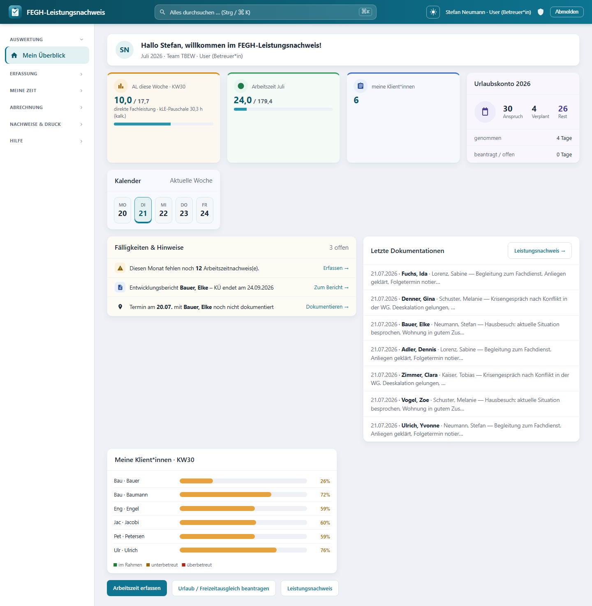

Mein Überblick (Startseite)¶

Startseite „Mein Überblick“: Wochen-Auslastung, Arbeitszeit, Urlaubskonto, Fälligkeiten und die eigene Klientinnen-Liste.*
Mein Überblick ist Ihre persönliche Startseite und der erste Bildschirm nach der Anmeldung. Sie bündelt auf einen Blick, was für Sie heute und diesen Monat wichtig ist: offene Aufgaben, Ihre Arbeitszeit, Ihr Urlaubskonto, der Wochenkalender und die Auslastung Ihrer Klient*innen. Sie erreichen die Seite jederzeit über Mein Überblick ganz oben in der Seitenleiste.
Ohne Mitarbeiter-Profil
Ist Ihrem Login kein Mitarbeiter-Profil zugeordnet, zeigt die Seite nur einen Hinweis. Die Administration kann das Profil im Admin-Bereich unter Mitarbeiter zuordnen; danach werden alle persönlichen Kacheln gefüllt.
Aufbau der Seite¶
Der Aufbau ist im Bildschirmfoto oben zu sehen: die Begrüßungskarte mit den Hinweisen (fehlende Nachweise / fällige Berichte), darunter die Kennzahl-Kacheln (Stempeluhr, Arbeitszeit, Klient*innen, Urlaubskonto), der Wochenkalender, die Tabelle Meine Klient*innen – Auslastung sowie die Schnellzugriffe. Die folgenden Abschnitte erklären jeden Bereich einzeln.
1. Begrüßung¶
Ganz oben begrüßt Sie eine Karte mit Ihren Initialen und dem Text „Hallo
2. Hinweise (Handlungsbedarf)¶
Direkt unter der Begrüßung erscheinen bei Bedarf farbige Hinweisbänder:
- Fehlende Arbeitszeitnachweise (gelb/Warnung): „Diesen Monat fehlen noch N Arbeitszeitnachweis(e)." Der Link Jetzt erfassen → führt direkt zur Arbeitszeiterfassung. Gezählt werden Werktage (Mo–Fr) des laufenden Monats bis heute, ohne Berliner Feiertage und ohne Tage, an denen Sie abwesend (z. B. im Urlaub) sind.
- Fälliger Entwicklungsbericht (blau/Info): „Entwicklungsbericht für
Tip
Erscheinen keine Hinweisbänder, ist aktuell nichts Dringendes offen – ein gutes Zeichen.
3. Obere Reihe: Kennzahlen (KPIs)¶
Stempeluhr (nur Team Verwaltung)¶
Mitarbeitende im Team Verwaltung sehen als erste Kachel eine Stempeluhr:
- Eine live tickende Uhr zeigt die heute bereits erfasste Arbeitszeit (im Format
HH:MM). Sie aktualisiert sich automatisch, während Sie eingestempelt sind. - Der Status lautet eingestempelt (mit Startuhrzeit, grüner Punkt) oder ausgestempelt.
- Ein großer Knopf schaltet zwischen KOMMEN (grün) und GEHEN (rot) um. Ein Klick öffnet bzw. schließt die aktuelle Arbeitssitzung; eine kurze Bestätigung erscheint danach.
Note
Die Stempeluhr wird nur für das Team Verwaltung eingeblendet. Betreuer*innen erfassen ihre Zeiten stattdessen über Meine Zeit → Arbeitszeit.
Arbeitszeit im Monat¶
Diese grüne Kachel zeigt Ihre Ist- gegenüber der Soll-Arbeitszeit des laufenden Monats in Stunden, z. B. 84,0 / 120,0 Std. Der Fortschrittsbalken darunter veranschaulicht den Erfüllungsgrad. Das Soll ergibt sich aus Ihrem hinterlegten Tagessoll mal den Werktagen des Monats.
Meine Klient*innen¶
Eine blaue Kachel nennt die Anzahl der Klient*innen, für die Sie als Bezugsbetreuer*in hinterlegt sind.
Offene Arbeitszeitnachweise¶
Je nach Stand erscheint eine von zwei Kacheln:
- Offene Nachweise (orange): Zahl-Badge mit der Anzahl fehlender Arbeitszeitnachweise und Link erfassen.
- Vollständig erfasst (grün, mit Häkchen): Für den laufenden Monat fehlt kein Nachweis mehr.
4. Mittlere Reihe: Kalender & Urlaubskonto¶
Wochenkalender¶
Das breite Panel Kalender zeigt die aktuelle Woche (Mo–Fr) als fünf Tageskacheln:
- Der heutige Tag ist hervorgehoben.
- Feiertage (Berliner gesetzliche Feiertage, inklusive Internationaler Frauentag am 8. März) sind als „frei" markiert.
Urlaubskonto¶
Das Panel Urlaubskonto
| Wert | Bedeutung |
|---|---|
| Gesamtanspruch | Ihr Jahresurlaubsanspruch in Tagen |
| Verplant | Summe aus bereits genommenem und beantragtem Urlaub |
| Resturlaub | Gesamtanspruch minus genommen minus beantragt |
Darunter listen zwei Zeilen die Tage genommen (genehmigt) und beantragt / offen (noch nicht entschieden) einzeln auf. Anträge stellen Sie unter Meine Zeit → Urlaub & Abwesenheit.
5. Tabelle: Meine Klient*innen – Auslastung¶
Die Tabelle zeigt für jede*n Ihrer Klient*innen die Jahresauslastung:
| Spalte | Bedeutung |
|---|---|
| Klient*in | Name |
| Kont./Jahr | Vertragliches Stunden-Kontingent für das Jahr (Monatswert × 12) |
| Ist | Bisher geleistete Fachleistungsstunden (Einzelleistungen + Gruppenanteile + Teamsitzungsanteil) |
| Rest | Verbleibendes Kontingent; negative Werte (Überschreitung) werden rot dargestellt |
| Auslastung | Prozent-Badge mit Ampellogik |
Die Ampel in der Spalte Auslastung:
- 🟢 grün – unter 85 %: im Plan
- 🟠 orange – 85 % bis 100 %: Kontingent wird knapp
- 🔴 rot – über 100 %: Kontingent überschritten
Für die Leitung
Als Leitung finden Sie oben rechts in diesem Panel die Schaltfläche Team-Übersicht →, die zur ausführlichen Auswertung Fachleistungsstunden mit Filtern nach Team und Betreuer*in führt.
Sind Ihnen keine Klient*innen als Bezugsbetreuer*in zugeordnet, erscheint der Hinweis „Dir sind aktuell keine Klient*innen als Bezugsbetreuer*in zugeordnet."
6. Schnellzugriffe¶
Am Seitenende führen drei Schaltflächen direkt zu den häufigsten Aktionen:
- Arbeitszeit erfassen
- Urlaub / Freizeitausgleich beantragen
- Leistungsnachweis
Weiterführend¶
- Erste Schritte – Anmeldung, Oberfläche und Rollen im Überblick.
- Zwei-Faktor-Anmeldung – Ihren Zugang zusätzlich absichern.